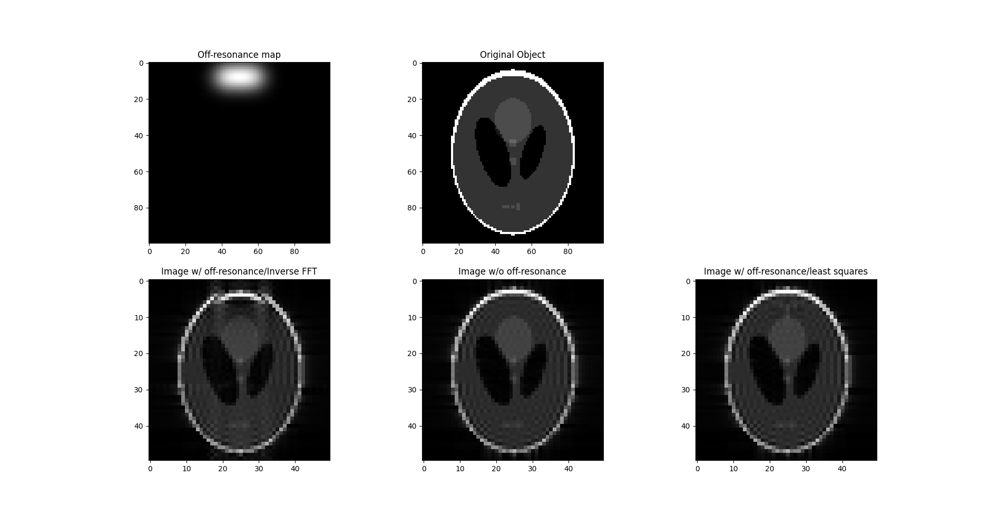
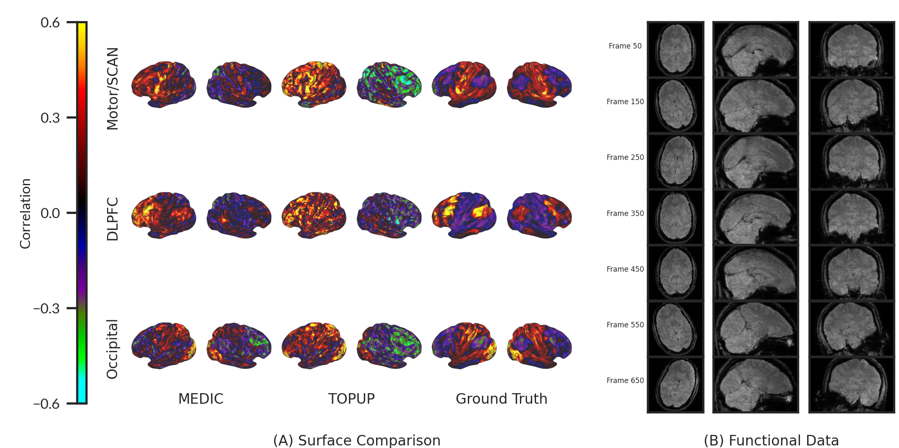
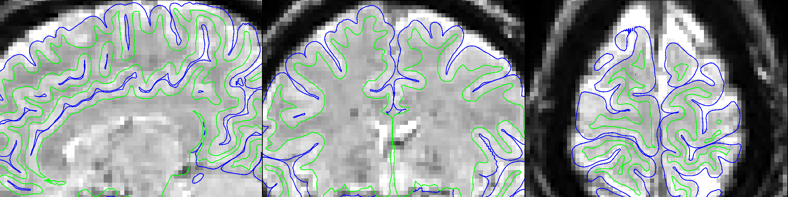
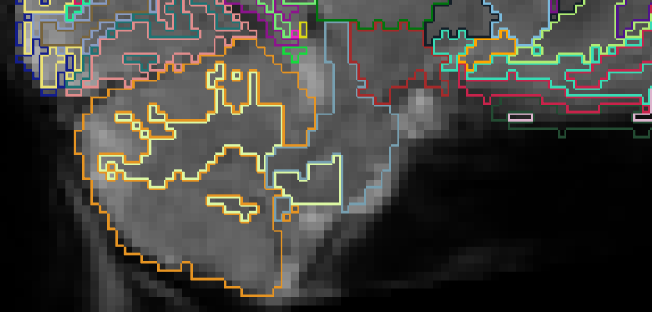
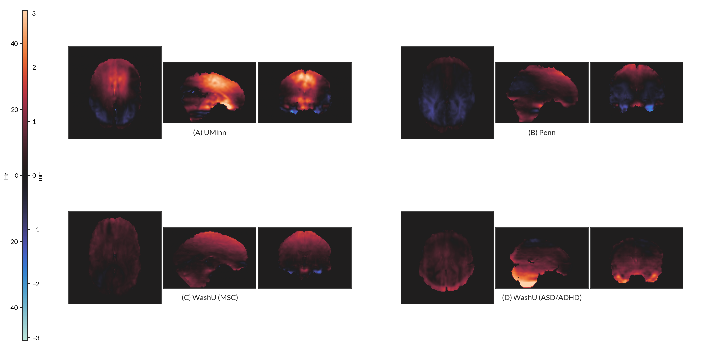
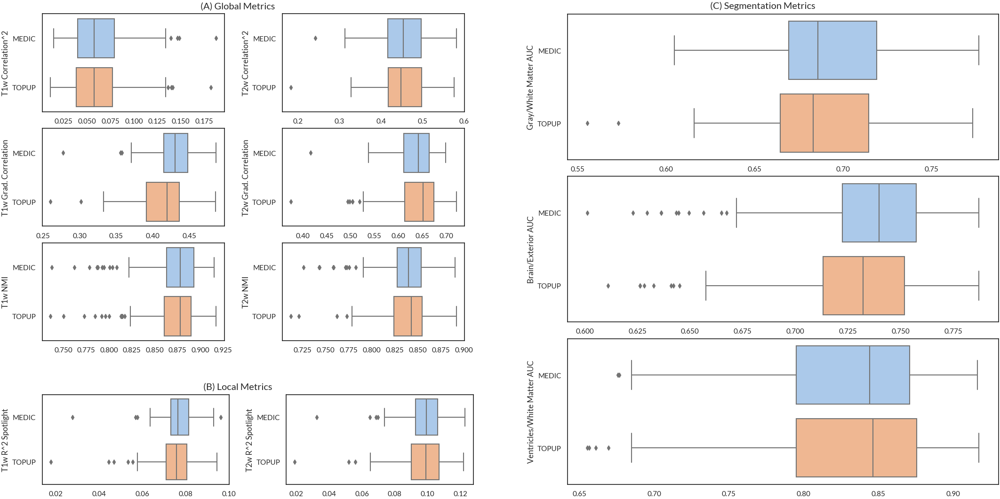
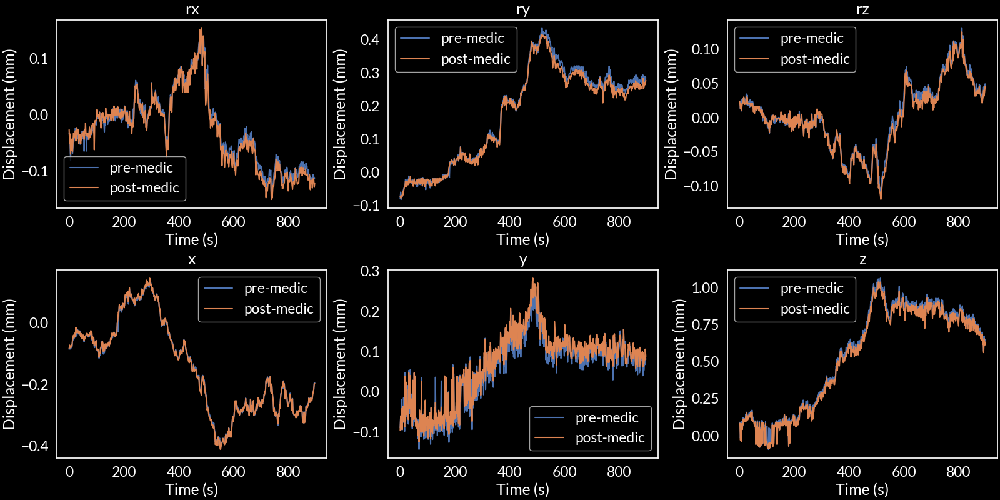

Framewise distortion correction in Multi-echo Echo
Planar Imaging
Andrew Van, PhD Candidate in Biomedical
Engineering
Dosenbach Lab, Washington University in
St. Louis
August 21, 2023
Echo Planar Imaging suffers from distortion due to B0
inhomogeneities

Simulation of distortion effects caused
by B0 inhomogeneities.
Correcting distortion requires measuring B0 field change.
Current B0 field mapping approaches
Current approaches[2]:
Phase Difference
PEpolar
Both require separate field map acquisitions before/after a EPI
scan!
[2] Wang F, Dong Z, Reese TG, Bilgic B, Katherine Manhard M, Chen J,
Polimeni JR, Wald LL, Setsompop K. Echo planar time-resolved imaging
(EPTI). Magnetic Resonance in Medicine. 2019;81(6):3599–3615.
The Multi-Echo DIstortion Correction (MEDIC) algorithm
MEDIC is an algorithm that extracts field maps from the phase
information of multi-echo EPI data. This removes the need for a separate
field map acquisition:
Example of PEpolar field map acquisition.
Field mapping is done before/after an EPI run.
In MEDIC, field maps are computed from
the phase information of ME-EPI, which allows for measurement of the
field frame-to-frame.
How does MEDIC work?
Correct phase offsets and phase wraps
Temporal Correction
Field Map Estimation and SVD Filtering
Invert Field Map to Undistorted Space
How does MEDIC work?
Correct phase offsets and phase wraps[3,4]
Wrapped Phase
Unwrapped Phase
[3] Eckstein K, Dymerska B, Bachrata B, Bogner W, Poljanc K, Trattnig S,
Robinson SD. Computationally Efficient Combination of Multi-channel
Phase Data From Multi-echo Acquisitions (ASPIRE). Magnetic Resonance in
Medicine. 2018;79(6):2996–3006.
[4] Dymerska B, Eckstein K, Bachrata B, Siow B, Trattnig S, Shmueli K,
Robinson SD. Phase unwrapping with a rapid opensource minimum spanning
tree algorithm (ROMEO). Magnetic Resonance in Medicine.
2021;85(4):2294–2308.
How does MEDIC work?
Temporal Correction
Find frames similar in head position (R = 0.98) and correct phase to
nearest $2\pi$ multiple of average phase.
Example of unwrapped phase solutions
settling on $2\pi$ offset away from other solutions.
Find frames similar in head position (R = 0.98) and correct phase to
nearest $2\pi$ multiple of average phase.
Bad solution in question.
Find frames similar in head position (R = 0.98) and correct phase to
nearest $2\pi$ multiple of average phase.
After temporal correction.
How does MEDIC work?
Field Map Estimation and SVD Filtering
The field map is computed by using weighted least squares:
Comparisons between MEDIC and static PEpolar (TOPUP)
correction.
MEDIC can measure field changes due to head position.
-X Rotation
+X Rotation
-Y Rotation
+Y Rotation
-Z Rotation
+Z Rotation
Field Map Differences (Rotated Head
Position - Neutral Position)
MEDIC corrects data in the presence of head position changes.

Functional Connectivity MEDIC vs. TOPUP
vs. Grouth Truth
MEDIC corrected data is more similar to group data than TOPUP
corrected data.
Similarity Comparison to ABCD Group
Template
MEDIC correction has greater correspondence to cortical anatomy than
PEpolar correction
UMinn: MEDIC corrected

UMinn: PEpolar (TOPUP)
corrected
Penn MEDIC corrected
Penn PEpolar (TOPUP)
corrected
MSC: MEDIC corrected
MSC: PEpolar (TOPUP)
corrected
MEDIC correction has greater correspondence to cerebellar anatomy
than PEpolar correction

ASD/ADHD: MEDIC corrected
ASD/ADHD: PEpolar (TOPUP)
corrected
MEDIC captures additional off-resonance effects.

Field map Difference (MEDIC -
TOPUP)
MEDIC captures additional off-resonance effects.
Comparison of ME-EPI data to GRE PEpolar field map shows additional
off-resonance effects in ME-EPI data.
Spin Echo PEpolar Image
(UPenn)
Comparison of ME-EPI data to GRE PEpolar field map shows additional
off-resonance effects in ME-EPI data.
Gradient Echo PEpolar Image
(UPenn)
Comparison of ME-EPI data to GRE PEpolar field map shows additional
off-resonance effects in ME-EPI data.
ME-EPI Image, 1st Echo
(UPenn)
Comparison of Field Map from PEpolar EPI
(TOPUP), FLASH (ROMEO), and ME-EPI (MEDIC) data.
MEDIC correction has greater correspondence to anatomy in
global/local alignment.

Global and local anatomical alignment
metrics
Global alignment metrics (whole brain) for ASD/ADHD Dataset. ✅
indicates best metric that was statistically significant (p < 0.05).
Correlation metric is the squared Pearson correlation between the
functional and anatomical data. Grad. Corr. is the Pearson correlation
between the gradient of the functional and anatomical data. Norm. MI is
the normalized mutual information between the functional and anatomical
data.
Metric
MEDIC
PEpolar
t-stat
p-value
df
T1w Corr.^2
✅0.062 (0.029)
0.060 (0.028)
5.259
< 0.001
184
T2w Corr.^2
✅0.456 (0.053)
0.453 (0.057)
2.374
0.019
184
T1w Grad. Corr.
✅0.430 (0.028)
0.414 (0.036)
11.473
< 0.001
184
T2w Grad. Corr.
0.637 (0.039)
0.638 (0.054)
-0.728
0.467
184
T1w Norm. MI
0.873 (0.029)
0.872 (0.029)
0.796
0.427
184
T2w Norm. MI
0.837 (0.026)
0.838 (0.026)
-0.885
0.377
184
Local spotlight t-statistic map.
Spotlight analysis was performed by computing the average squared local
correlation between the functional and anatomical images across all
voxels within a 3 voxel radius sphere.
Local alignment metrics (whole brain) for ASD/ADHD Dataset. ✅
indicates best metric that was statistically significant (p < 0.05).
Spotlight analysis was performed by computing the average squared local
correlation between the functional and anatomical images across all
voxels within a 3 voxel radius sphere.
Metric
MEDIC
TOPUP
t-stat
p-value
df
T1w Spotlight R^2
✅0.077 (0.007)
0.075 (0.009)
6.528
< 0.001
184
T2w Spotlight R^2
✅0.098 (0.011)
0.097 (0.014)
2.365
0.019
184
Segmentation based metrics for ASD/ADHD Dataset. ✅ indicates best
metric that was statistically significant (p < 0.05). Each metric
examined the separability of tissue types using anatomical segmentation
labels applied to functional data. Separability was measured by treating
anatomical segmentation labels as ground truth and assessing the
performance of binary classification for each tissue boundary. Results
are reported as the AUC of the resulting ROC curve.
Metric
MEDIC
TOPUP
t-stat
p-value
df
Gray/White
✅0.691 (0.031)
0.686 (0.036)
6.307
< 0.001
184
Brain/Exterior
✅0.736 (0.035)
0.729 (0.034)
11.982
< 0.001
184
Ventricle/White
0.828 (0.057)
0.829 (0.062)
-0.273
0.785
184
Conclusions
MEDIC provides superior distortion correction performance over
PEpolar (i.e. TOPUP) method
Likely due to additional correction of eddy-currents
MEDIC field maps are coupled in space and time to the same EPI data
it is correcting.
No need for co-registration of field map to EPI data
Removes separate sequence for field map acquisition
Can account for field changes due to head motion
Extras
MEDIC corrects respiration effects in motion parameters.

Motion Parameters Pre/Post MEDIC
Correction
Power Spectral Density of Motion
Parameters Pre/Post MEDIC Correction